Rock Rose Risk · Commercial hardware
RoseBud Survey Rover
A rocker-bogie rover that drives a client's property and turns it into a 3D model, so a wildfire risk assessor can measure the distance between a woodpile and a wall without walking forty acres of hillside. Three generations, each one a near-total redesign of the last.
- Client
- Rock Rose Risk
- My role
- Mechanical, electrical,
packaging, field test - Generations
- V1 · V2 · V3
- Chassis
- Rocker-bogie, 6×drive,
6×steer - Compute
- Raspberry Pi 5 + RP2040
- Structure
- PETG · 6061 plate ·
sealed bearings - Terrain
- Sand, boulders,
slopes to 45° - Status
- Complete · V3 delivered
The brief
Rock Rose Risk assesses wildfire exposure on residential property in Southern California. The assessment depends on questions that are fundamentally geometric: how far is that shrub from the eave, how much dead fuel is under the deck, what is the continuous path a fire could take from the fence line to the house. Somebody has to walk the property and measure it, and on forty acres of hillside that is slow, inconsistent, and depends heavily on which person walked it.
The ask was a system that collects that geometry accurately, repeatably, and cheaply enough to deploy at scale. My scope was everything physical: pick the sensing approach, pick the platform, design it, build it, wire it, power it, test it, and get it into a box that survives a courier.
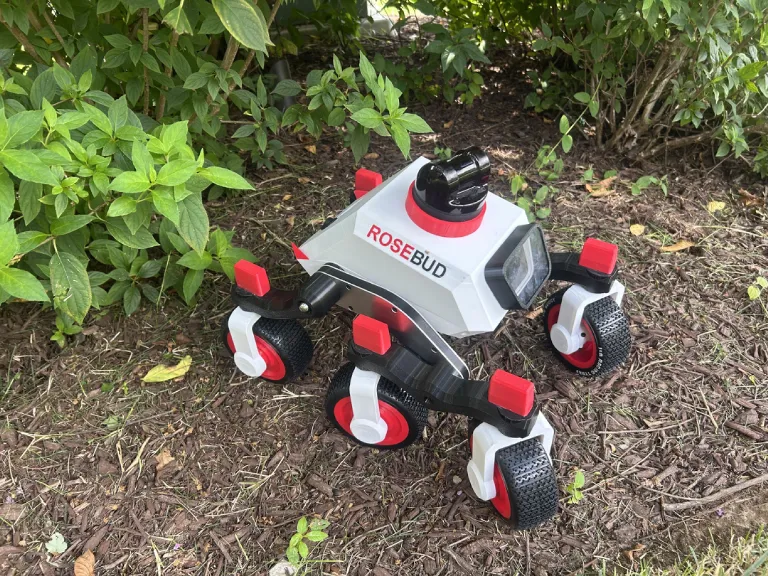
Choosing how to see
Before any CAD, I wrote a feasibility study comparing six ways of capturing a property. Two sensing methods, LiDAR and Gaussian splatting, across three carriers each: a handheld device the client operates, a rover, a backpack, a quadruped, and a drone.
What the two methods actually do
LiDAR fires laser pulses and times the return. It is precise, it works in darkness and rain, and it gives you geometry you can trust. It also cannot see colour or texture, so it cannot tell you whether a mass of returns is a live oak or a dead one, which is exactly the distinction that matters for fuel loading. Wet leaves go specular and add noise.
Gaussian splatting reconstructs a scene from overlapping photographs using structure from motion, producing millions of small coloured primitives. It carries the colour and texture LiDAR lacks, which is what lets you classify material. It is also fussy: it wants 70–80% image overlap, varying heights and angles, at least 4K, and a scene that holds still. Animals, wind in the canopy and inconsistent lighting all degrade it.
Scoring
I scored six systems out of ten on six criteria and weighted nothing, because at that stage nothing had earned the right to be weighted. Privacy is on the list because the output is a detailed dimensional model of a private residence, and that is not a criterion you get to bolt on later.
| System | Price | Consistency | Quality | Mapping | Integration | Privacy | Total / 60 |
|---|---|---|---|---|---|---|---|
| LiDAR (rover) | 5.0 | 8 | 8 | 9 | 7 | 10 | 47.0 |
| Splatting (rover) | 7.8 | 6 | 7 | 7 | 9 | 10 | 46.8 |
| LiDAR (backpack) | 8.7 | 6 | 7 | 7 | 7 | 9 | 44.7 |
| Splatting (handheld) | 10.0 | 4 | 3 | 5 | 6 | 9 | 44.0 |
| Splatting (drone) | 9.2 | 7 | 7 | 10 | 6 | 5 | 44.2 |
| LiDAR (quadruped) | 6.5 | 8 | 8 | 9 | 9 | 0 | 40.5 |
The two rejections worth explaining
The quadruped scored at or near the top on terrain, consistency, integration and sensor payload. It ships pre-built with LiDAR and working locomotion software. I recommended against it anyway, because the platform routes telemetry offshore and the product we would be generating is a dimensional map of a client's home. A privacy score of zero is not a number you trade against convenience. That one line ended a system that otherwise won on merit.
The drone looks cheapest until you cost the operation rather than the hardware. Commercial use requires aircraft registration regardless of weight and a Part 107 certificated pilot, autonomous flight is not permitted in this configuration, visual line of sight has to be maintained, and you cannot capture the neighbouring parcel that half the fire risk sits on. That means flying a certificated person to every site. The $759 airframe was never the cost.
Final recommendation was a rocker-bogie rover carrying LiDAR as the geometric skeleton with cameras registered to it: LiDAR for the distances, imagery for the material classification, with a path toward LiDAR-guided splatting once the platform was stable.
Two chassis that did not make it
Before settling on rocker-bogie I built and rendered the alternatives. Both taught me the same lesson from opposite directions: at this scale, suspension compliance beats everything.
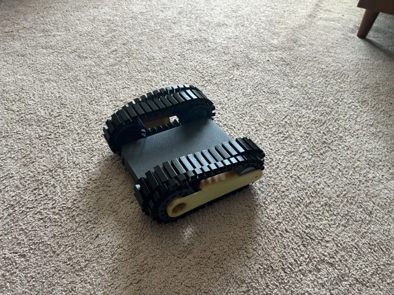
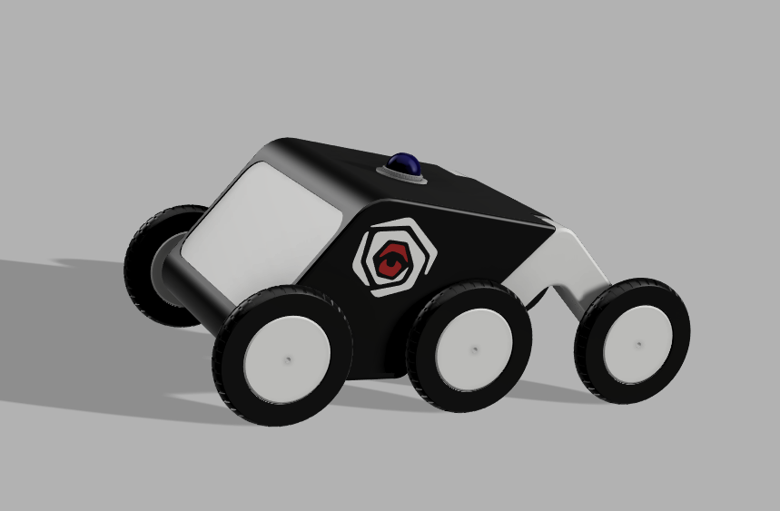
A rocker-bogie keeps all six wheels loaded across an obstacle roughly twice a wheel diameter tall, and it does it with a passive linkage: no springs, no dampers, nothing to tune or replace in the field. It also keeps the sensor mast far more level than a rigid frame, which matters more than traction does when the payload is a camera.
V1: prove the idea, learn what breaks
V1 started from Wild Willy, an open-source rocker-bogie design, and I changed what the payload required: a redesigned main cabin with camera and servo mounting, more internal volume, and mounts for the LiDAR and wireless module. I also cut a slot into each wheel hub so the motor driver module lives out at the wheel instead of adding to the harness inside the cabin.
It drove. That was the point: get a platform under the sensors fast enough to find out what the real problems are, which are never the ones you predicted.
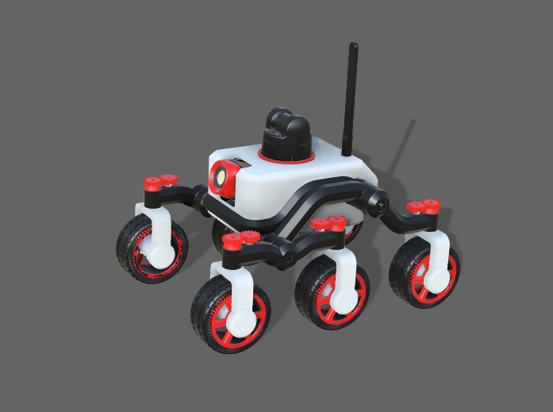
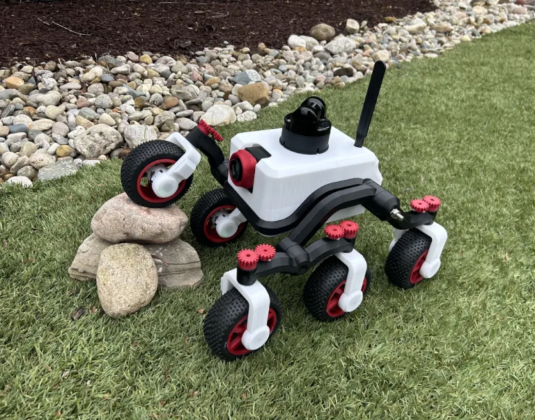
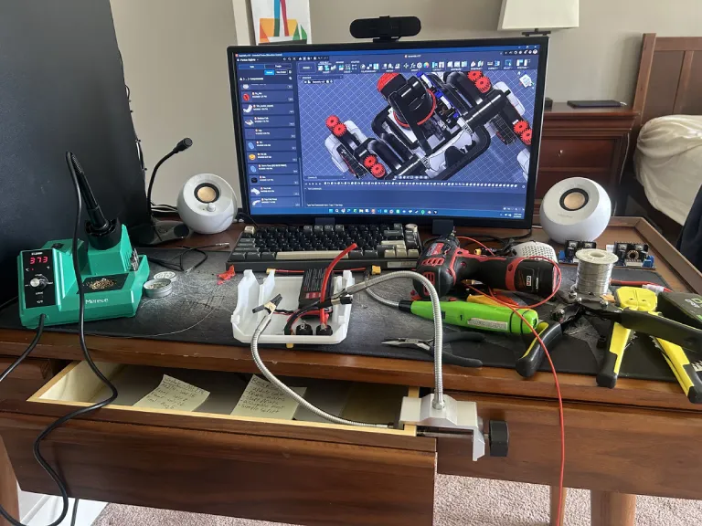
Failure V1 · Harness
Over eighty wires, hand spliced, packed into a cabin with no route plan
Every subsystem was point-to-point. Six motors, six steering servos, the drivers, the buck converters, two batteries and two BMS boards all terminated in the same volume, spliced together by hand. It was a fire hazard in a product whose entire purpose is fire risk, which is the kind of irony you only get to enjoy once.
Fix
Design a PCB. Every inter-board connection becomes a trace, every splice becomes a connector, and the cabin gets a route plan before it gets components.
The other V1 faults, all of which drove V2:
- Spur gear steering: a servo-driven spur gear stack with enough backlash to skip teeth under load. On a steep grade or loose rubble it stripped.
- Plastic-on-plastic joints: no bearings, so the wheels bowed inward or outward depending on direction of travel.
- Exposed motor pods: Southern California mornings coat everything in mist. A short was a matter of time.
- Two batteries: two charge cables, and only one cell pack chargeable at a time.
- Spoked wheels: brush and twigs caught in the spokes.
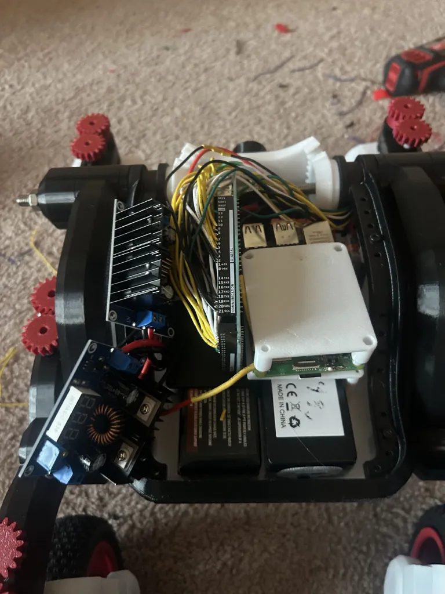
V2: full redesign, nothing carried over
V2 shares no parts with V1. Every fault above got an explicit fix, and the ones that mattered most were structural rather than clever.
The board
This was my first PCB and my first time in KiCad. It absorbs the entire harness: buck conversion, motor drivers, servo headers, battery and BMS connections, all on one 2 oz copper board with trace widths sized to the current they carry rather than to whatever the autorouter felt like.
The design rule I set was that no wire inside the cabin should be longer than the distance from its connector to the thing it drives. That single constraint is what turned the cabin from a bird’s nest into something I can open, diagnose and close in a few minutes.
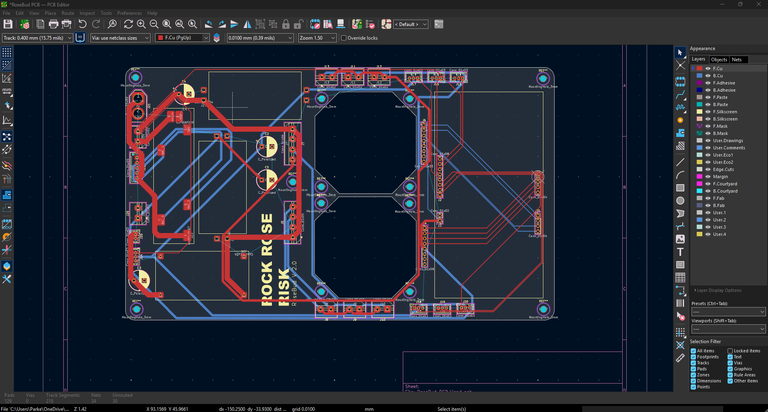
Direct drive
The spur gear stack came out entirely. I redesigned the wheel hubs and the surrounding structure around a direct-driven servo mount, which removed the backlash, removed the skipping, and removed a whole class of parts that could strip. Fewer teeth in the load path is fewer teeth to shear.
Bearings everywhere
Every wheel pod and pivot got a sealed ball bearing. This is the change that made the rover feel like a machine instead of a print. Toe stopped wandering with direction of travel, steering repeatability improved, and wear stopped concentrating on printed surfaces.
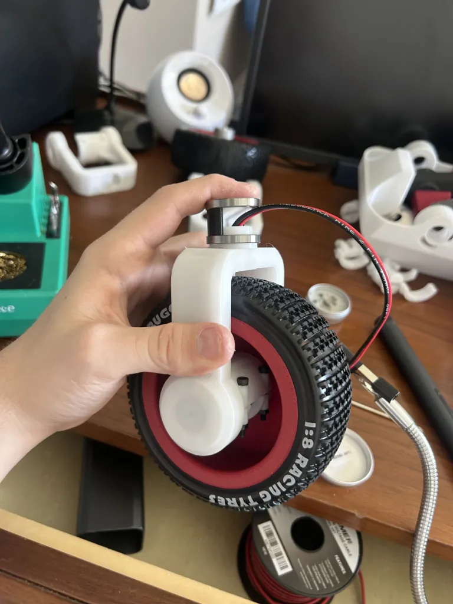
Aluminium where the loads are
The long rocker arm is the most highly stressed member on the vehicle and the one with the worst geometry for a printed part: a slender curved beam loaded in bending and torsion, printed in layers perpendicular to the load. It flexed visibly.
I backed it with 6061 plate. The printed arm still carries the geometry and the mounting features; the plate carries the load and kills the torsion. It is a cheap fix: flat stock, two-dimensional profile, no fixturing. It is also the pattern I now reach for whenever a printed part is doing structural work it was not born for.
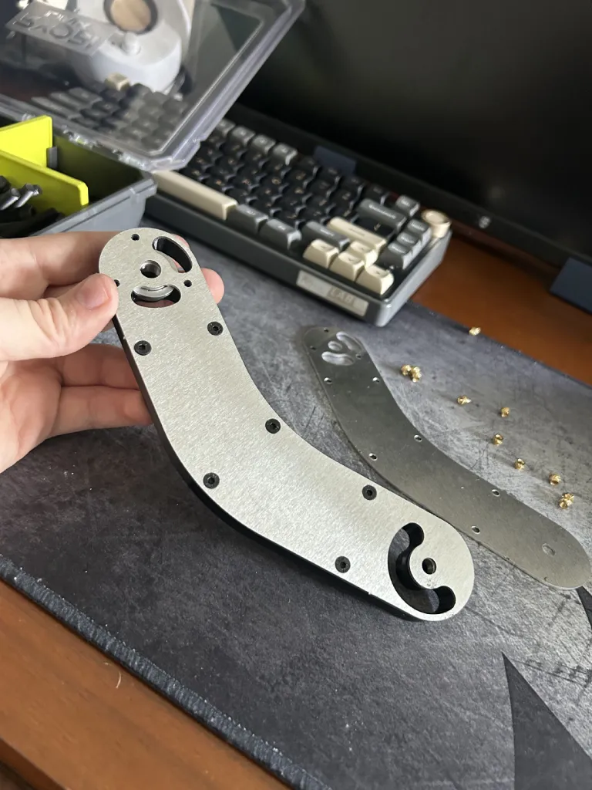
- Water ingress
- Motor pods and cabin reworked to shed mist and light rain
- Wheels
- Spokes deleted, rim enlarged to grip the tyre bead
- Cabin
- Enlarged and made serviceable, real screw bosses, real mounting points
- Cellular
- 4G module → 5G HAT for the Pi
- Drivers
- Six discrete drivers → two dual-channel
- Regulation
- Buck converter modules → UBECs
- Batteries
- Two packs → one larger pack
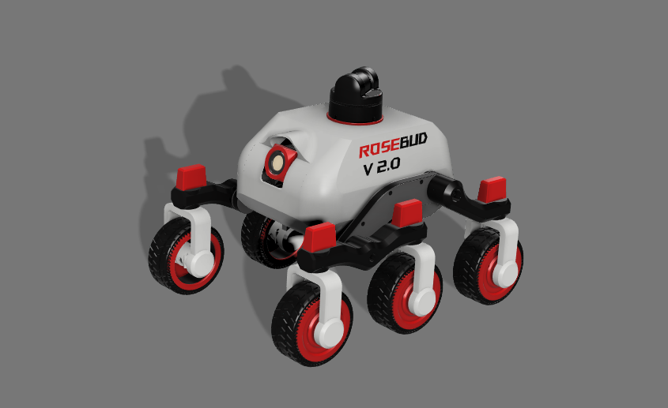
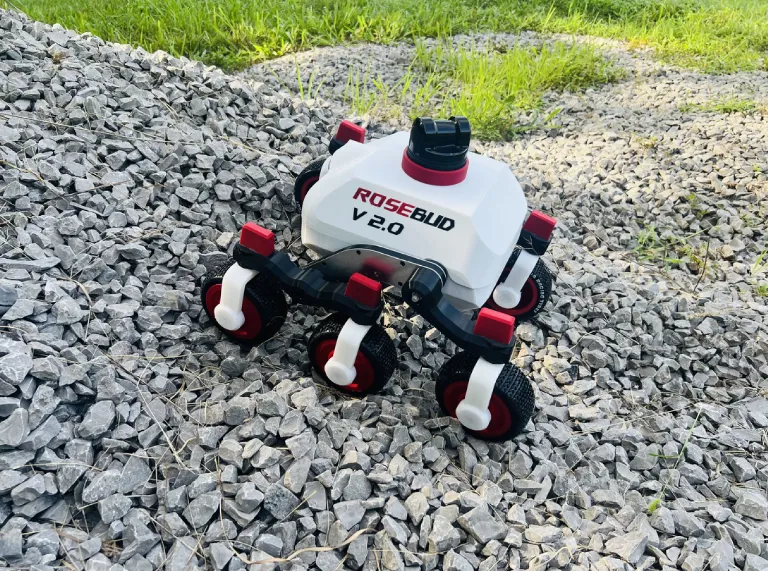
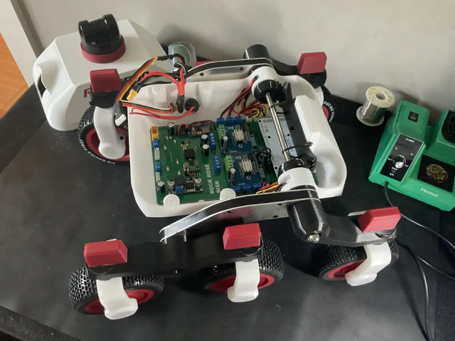
V3: make it shippable
V2 worked. V3 was about everything that stands between a working robot and a product: size, cost to ship, charging a customer can do, and the ability to take it apart and put it back together without swearing.
Shrink the brain, shrink the box
The largest single change was replacing the Arduino Mega with a Raspberry Pi Pico and stripping the dead space out of the PCB. That recovered over two inches of board length, which let me shrink the cabin, which shrank the shipping carton, which lowered the cost of every unit that leaves the building. A microcontroller swap turned into a logistics decision.
Charge it like a laptop
V2 charged from a hobby balance charger. V3 charges from USB-C, through a PD trigger, a constant-current/constant-voltage stage and the BMS. The customer plugs in a USB-C cable.
Fly it as baggage
Dropping the pack from 10 Ah to 6 Ah put the rover under the 100 Wh threshold that governs lithium batteries in air transport. That is a design constraint that comes from a regulation, not from physics, and it was worth the runtime to get it.
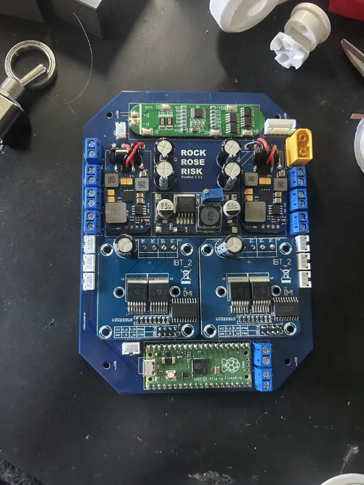
- Camera
- Polycarbonate shield plus pan and tilt servos
- Bearings
- Tolerances and interference fits reworked across the chassis
- Steering
- Proper servo mounting added: V2 had none
- Interface
- Status screen for state, battery and link
- Serviceability
- Dozens of small changes: spacing, boss locations, fastener access
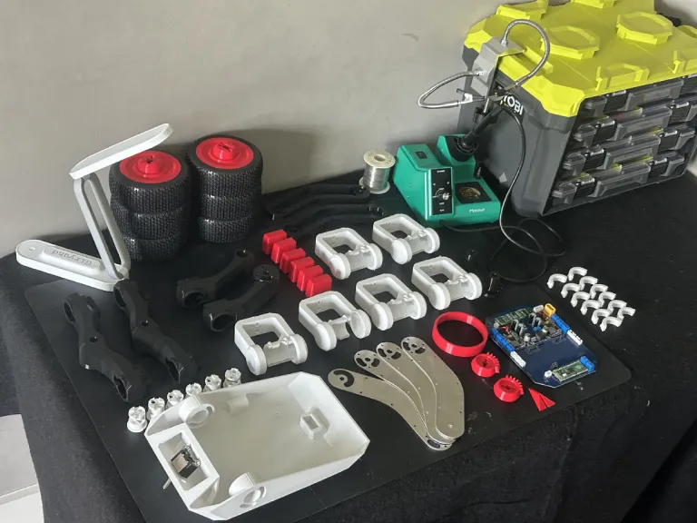
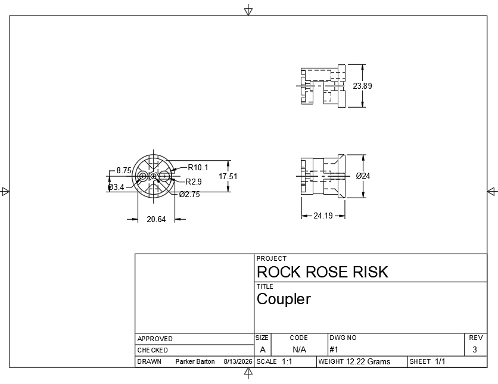
The electrical system
This is the part of the project I knew least about when I started and the part I am proudest of now. I learned KiCad, power budgeting and battery management on this rover, mostly by getting them wrong first.
Power chain
| Stage | Part | Set point | Feeds |
|---|---|---|---|
| Wall input | USB-C PD trigger | 20 V | Charge stage |
| Charge | XL4015 CC/CV | 16.8 V CV, current limited | BMS P+ / P− |
| Protection | 4S BMS | Cell balance, over-discharge cut | Pack |
| Pack | 4S LiPo, 6000 mAh | 88.8 Wh (under the 100 Wh air limit) | Main rail |
| Servo rail | ZTW UBEC | 6.0 V | 6 steering servos + camera gimbal |
| Logic rail | ZTW UBEC | 5 V | Pi 5, Pico, sensors |
| Drive | 2 × BTS7960 | PWM from Pico | 6 gear motors |
Trace widths
On 2 oz copper: 2.5 mm on battery input and main rail, 2.0 mm on motor outputs, 1.5 mm on the 5 V and 6 V rails, 1.2 mm on the charge path, 1.0 mm on 12 V, 0.5 mm on cell balance and 0.4 mm on everything that only carries information.
Control split
An 8BitDo Pro 2 pairs to the Pi over Bluetooth. The Pi handles the controller, the LiDAR, the camera and the link, and passes drive and steer commands down a serial line to the Pico, which owns the PWM. Keeping the real-time work off a general-purpose Linux box is the whole reason the Pico is there.
Failure V2 · Battery management
Eight days chasing a BMS that was working correctly
The pack refused to energise. I went through the BMS, the cell taps, the charger and the wiring harness assuming the protection board had failed. It had not. A 5 V UBEC downstream had died shorted, which put the main rail across ground, and the BMS was doing precisely its job by refusing to connect the pack to a dead short.
I also found a genuine wiring error while I was in there: B− and P− were both tied to the ground net, which defeats the protection path entirely.
Fix
Isolate B− onto its own net at the connector. Wake the pack with a bench supply across P+ / P−. And before condemning a protection device, prove the load is not the fault: a part that refuses to turn on is often the only part behaving.
Field testing, and a courier
Mountain test
I took V3 out and drove it for twenty to thirty minutes on real terrain, climbing steep grades over Bluetooth. It handled the surfaces it was designed for. Then a motor driver gave out, which was the correct outcome for that session: I had earlier ganged all six motors onto a single driver, and it had been living on borrowed time since. Splitting back to two channels fixed it.
Servo tuning was the longest slog. Several steering servos had their horns clocked so that mechanical straight-ahead sat at the very edge of the servo’s travel, which produced steering that worked in one direction and refused in the other. I moved the control code from degrees to microseconds to recover the full range, then re-clocked the horns properly.
Failure V3 · Transit
Finished units arrived shattered at the 20 mm motor pod joints
I shipped completed rovers and they came out of the box broken. The failures were all in the same place: the 20 mm joints between the motor pods and the legs, printed in PETG. Courier handling routinely subjects a package to drops and impacts far beyond what PETG survives at a stress concentration, and my cardboard-and-foam packing did not suspend the chassis; it let the mass of the robot load its own joints on every impact.
The part was adequate for its service load and completely inadequate for its transport load. Those are different load cases and I had only designed for one of them.
Fix
Reprint the joints in PA-CF or PC, oriented so the layer lines are not normal to the bending stress, or machine them from 6061 on the HAAS. Repack in a double-wall carton with pick-and-pluck foam so the chassis floats and the arms ship detached.
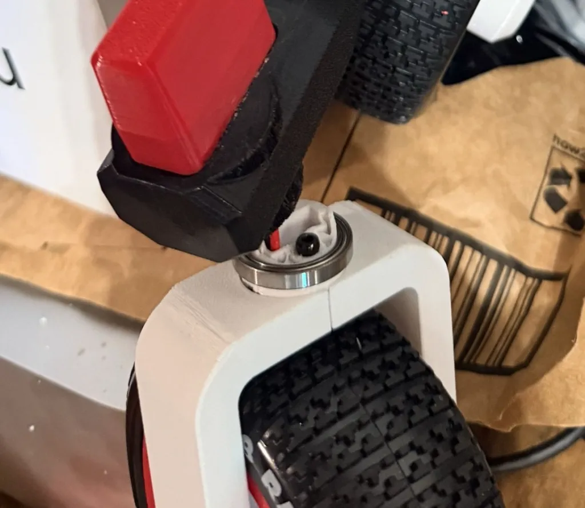
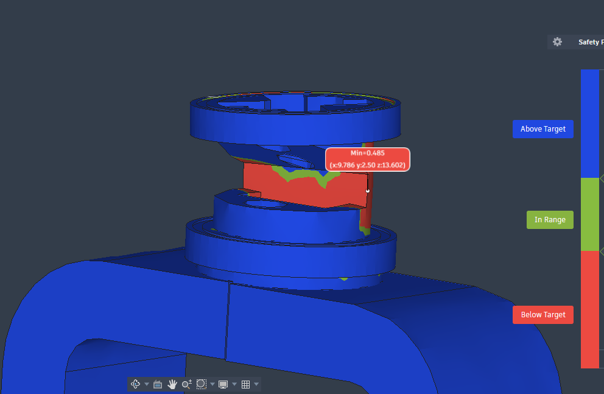
Open items and what I would change
Things I have flagged that are not yet closed. I would rather have them written down in public than discovered by somebody else.
- No fuse on the main power path. A 4S LiPo will deliver enormous fault current into a short and nothing currently interrupts it. This is the highest-priority item on the list.
- Product liability cover. A powered vehicle operating on a customer's property is a liability exposure and needs insurance before it becomes a fleet.
- FCC certification. The unit contains intentional radiators. Commercial deployment needs the equipment authorisation work done properly.
What I would do differently
- Design the transport load case at the same time as the service load case. The joints were never weak for driving. They were weak for being thrown.
- Metal earlier. Every joint I eventually converted to aluminium is a joint I should have identified in the first load path sketch. Printed plastic is for geometry, not for carrying the machine.
- Bearings from V1. There is no version of this project where plastic-on-plastic pivots were the right answer, and I spent a whole generation finding that out.
- Instrument sooner. Current draw per rail logged from the beginning would have caught the ganged-driver problem and the failing UBEC weeks before either of them stopped the vehicle.